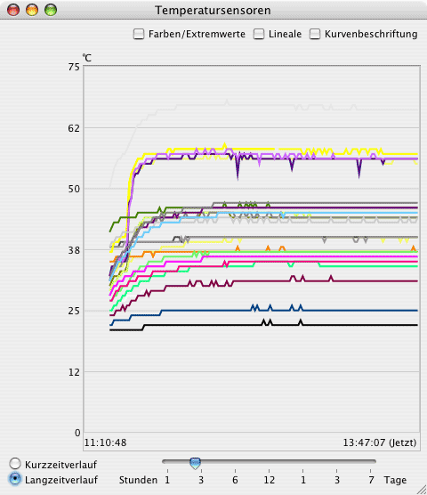
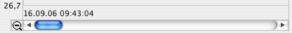
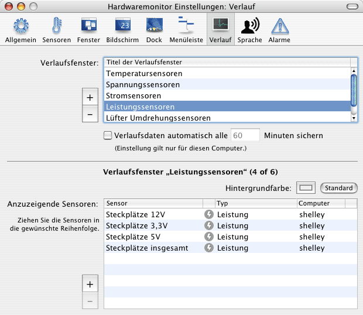

Werteverlauf darstellen |
Das Monitorprogramm ist mit einer leistungsstarken Verlaufsfunktion ausgestattet, die es erlaubt, die Historie von Messwerten über eine längere Zeit hinweg zu verfolgen und die Daten grafisch sichtbar zu machen. Verlaufsdaten können in zwei verschiedenen Betriebsarten angezeigt werden:
Die grafische Darstellung der Werte erfolgt in einem oder beliebig vielen Fenstern nach dem Beispiel in nachfolgender Abbildung.

Ist eine Kurve unterbrochen, zeigt dies an, dass im betreffenden Zeitabschnitt kein Messwert erfasst wurde. Das Monitorprogramm lief zu dieser Zeit nicht oder der Computer war abgeschaltet.
Mit den Knöpfen links unten kann zwischen den beiden Darstellungsarten gewählt werden. Ist der Langzeitverlauf gewählt, kann der betrachtete Zeitraum mit dem Schieberegler eingestellt werden. Die Zeitachse verläuft von links nach rechts, wobei rechts jeweils die aktuellen Messwerte gezeigt werden.
Wenn der ausgewählte Zeitraum so groß wird, dass er nicht mehr mit voller Auflösung in der aktuellen Fensterbreite angezeigt werden kann, erlaubt Ihnen das Programm, die Messwerte horizontal durchzurollen. Eine Lupe mit dem Symbol - erscheint in diesem Fall (siehe unten). Falls Sie auf dieses Symbol klicken, wird die Zeitachse so verkleinert, dass sie vollständig in das Fenster passt und das Symbol ändert sich in ein Pluszeichen +. Beachten Sie, dass isoliert stehende Bereiche von Kurven (im Falle von größeren Lücken in den Verlaufsdaten) hierbei möglicherweise so weit verkleinert werden, dass sie nicht mehr sichtbar sind. Um wieder auf volle Auflösung zurück zu schalten, drücken Sie auf das Symbol +.

Kreuzen Sie das Feld Farben/Extremwerte an, erscheint in einem Schubfach des Fensters eine Legende, welcher Sensor durch welche Kurvenfarbe repräsentiert wird. Die Tabelle im Schubfach zeigt außerdem die Extremwerte für den ausgewählten Zeitraum an, was detailliert in einem anderen Abschnitt des Referenzhandbuchs beschrieben wird. Sie können die Farbe für jeden Sensor sofort hier einstellen, indem Sie die Farbe in der Tabelle anklicken, oder hierzu das Einstellungsfenster verwenden.
Nach Ankreuzen von Lineale erscheinen zwei Lineale, die als Fadenkreuz dienen, um den exakten Wert jedes einzelnen Punktes einer Kurve zu bestimmen. Die Daten für Zeitpunkt und Messwert werden zum Fadenkreuz hinzugeblendet.
Der Schalter Kurvenbeschriftung dient dazu, ein kleines Etikett zur Identifizierung neben jeder Kurve einzublenden. Die Etiketten verwenden die Sensorkurznamen, die Sie im Einstellungsfenster definiert haben.
Um alle konfigurierten Verlaufsfenster zu öffnen, wählen Sie den Menüpunkt Fenster > Verlaufsfenster einblenden oder drücken Sie ⌘+⇧+H. Sie können diesen Punkt auch verwenden, falls Sie ein paar (aber nicht unbedingt alle) Verlaufsfenster geschlossen haben und wieder öffnen möchten. Um alle offenen Verlaufsfenster gleichzeitig zu schließen, wählen Sie Fenster > Verlaufsfenster ausblenden oder drücken Sie ⌘+⌥+W.
Die Anzahl der Verlaufsfenster ist beliebig und wird nur durch den Speicherplatz Ihres Computers begrenzt. Sie können Verlaufsfenster und die dort darzustellenden Sensoren über die Rubrik Verlauf im Einstellungsfenster konfigurieren.

Um ein neues Verlaufsfenster einzurichten, betätigen Sie den Knopf + links neben der oberen Tabelle. Es erscheint ein neuer Eintrag in der Tabelle und Sie können nach Anklicken den Titel des neuen Verlaufsfensters nach Ihren Wünschen anpassen. Um ein oder mehrere Fenster zu löschen, wählen Sie die entsprechenden Einträge in der Tabelle aus und betätigen den Knopf -.
Ist ein Fenster ausgewählt, so können Sie in der unteren Hälfte der Fensters Sensoren in der Tabelle hinzufügen oder löschen, so wie es oben bereits beschrieben wurde. Beachten Sie, dass ein Verlaufsfenster immer nur Sensoren des gleichen Typs enthalten darf. Ansonsten könnte die senkrechte Achse nicht sauber beschriftet werden. Sie können also einen Temperatursensor nicht in ein gemeinsames Fenster mit einem Akkukapazitätssensor legen. Die Hintergrundfarbe für jedes Fenster kann mit dem kleinen Farbnapf über der Tabelle eingestellt werden.
Es ist erlaubt, einen Sensor mehrmals in verschiedenen Verlaufsfenstern darstellen zu lassen. Bei leistungsschwachen Computern sollten Sie allerdings nicht zu viele Verlaufsfenster einrichten, da die ständige Aktualisierung der Grafiken Rechenzeit kostet und so nicht mehr genügend Leistung für andere Programme zur Verfügung steht.
Ein einzelnes Verlaufsfenster kann nur Sensoren der gleichen Messgröße, zum Beispiel ausschließlich Temperatursensoren enthalten. Dies ist notwendig, um sicherzustellen, dass die Graphen einheitliche Maßstäbe und Einheiten auf ihrer senkrechten Achse zeigen. In einigen Fällen möchten Sie jedoch vielleicht beobachten, wie Sensoren verschiedener Messgrößen sich zu einem bestimmten Zeitpunkt verhalten haben. Zum Beispiel eine hohe Prozessorauslastung, die höhere CPU-Temperaturen und höhere Stromstärken verursacht, die wiederum höhere Lüfterdrehzahlen verursachen.
Um ein Zeitintervall zu überwachen, wobei Sensoren verschiedener Typen in direkter Beziehung zueinander sichtbar sein sollen, können Sie mehrere Fenster miteinander kombinieren, wodurch deren Verlaufsgraphen überlagert werden:
Sie können alle Überlagerungen aus dem ausgewählten Hauptfenster entfernen, indem Sie den Knopf Überlagerungen abschalten im Inspektorfenster betätigen. Beachten Sie, dass für kombinierte Verlaufsfenster die folgenden Einschränkungen gelten:
Die Verlaufswerte werden jedes Mal automatisch gesichert, wenn das Programm beendet wird. Falls Ihr Computer allerdings defekt ist und Sie das Programm verwenden wollen, um zu prüfen, ob der Defekt durch eine Überhitzungssituation ausgelöst wird, könnten die Daten verloren gehen, wenn der Computer abstürzt bevor die Daten gesichert werden konnten. Aus diesem Grund können Sie eine Option aktivieren, die Daten in regelmäßigen Abständen speichern zu lassen. Setzen Sie ein Häkchen bei Verlaufsdaten automatisch alle x Minuten sichern und geben Sie einen Wert zwischen 1 und 1440 Minuten (einem Tag) ein. Der Wert gilt nur für diesen Computer, nicht für fernüberwachte Rechner.
Sie können die Messwerte des Kurzzeitverlaufs aller Sensoren über den Menüpunkt Monitor > Kurzzeitverlauf löschen oder drücken von ⌘+K löschen.
Sollte es einmal nötig sein, die gespeicherten Werte des Langzeitverlaufs zu löschen, ziehen Sie den Ordner
~/Library/Application Support/Hardware Monitor, beziehungsweise
~/Library/Application Support/Temperature Monitor
aus Ihrem privaten Ordner in den Papierkorb. Beachten Sie, dass hierbei alle Messwerte für alle Computer, die Sie in der Vergangenheit benutzt haben, verloren gehen!
Der Kurzzeitverlauf wird automatisch gelöscht, sobald Sie das Aktualisierungsintervall der Messungen ändern.